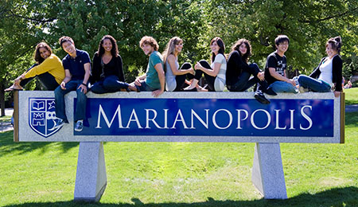

Marianopolis College is an English-language private CEGEP in Westmount, Quebec, Canada. Marianopolis College is the only school of its kind offering pre-university studies in English. For more than 100 years, Marianopolis has prepared motivated students for the world’s top universities.
Recognized as one of Quebec’s top pre-university colleges, Marianopolis College boasts a diverse student body comprised of 2,000 students from over 175 public and private high schools, English and French, from Quebec and abroad.
Student Life
Since it was founded in 1908, Marianopolis has supported students in the classroom and beyond. The College has more student clubs than any other school of its kind and it is the only college to hold a universal break, also called Activity Period, twice a week. Activity Period is an opportunity for students to hear from world-renowned guest speakers, play intramural sports, participate in clubs and generally grow outside class.
Marianopolis students also have the opportunity to get involved in a variety of enriching activities, from the weeklong ArtsFest every spring and the annual Arts Trip, to science, math and robotics competitions.
Why Marianopolis?
Why should a student apply to Marianopolis? The answer is simple: Marianopolis is the place for motivated young people to achieve, grow and succeed. As Quebec’s only English-language private college, Marianopolis has been uniquely positioned for more than a century to offer unparalleled support, resources and services to students in the classroom and beyond.